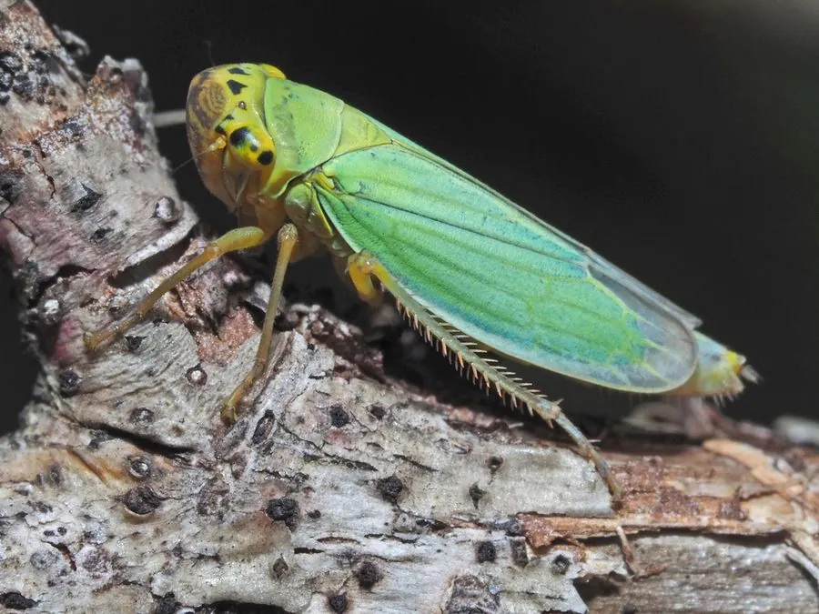

昆虫 · 动物界
大青叶蝉 Cicadella viridis

体色青绿、善跳跃的叶蝉，成虫和若虫刺吸多种植物汁液，是农林果树常见的害虫和植物病毒传播媒介。
- 分类
- 门节肢动物门纲昆虫纲目半翅目科叶蝉科属大青叶蝉属
- 栖息环境
- 林地、果园、农田与草地，成虫和若虫在植物上取食
- 地理分布
- 中国大部分地区，以及欧洲和亚洲其他地区
- 保护级别
- 暂无评估；农林害虫
物种志
大青叶蝉成虫体长约 7–10 mm，体色青绿至蓝绿色，头部和前胸背板颜色较深，前翅绿色，末端半透明，复眼大，足细长善跳跃。若虫体色浅绿，行动活泼，受惊时迅速跳走。
它食性广，危害杨树、柳树、苹果、梨、桃、麦类、蔬菜等多种植物，成虫和若虫刺吸嫩枝、叶片和果实汁液，造成叶片褪绿、卷曲和生长不良，雌虫还会在枝条上产卵，刺破树皮造成伤口，影响果树越冬。大青叶蝉分布很广，一年发生多代，以卵在树皮内越冬。它还可能传播植物病毒，是农业和林业上的综合害虫。防治以清除杂草、灯光诱杀、保护天敌和科学用药为主，秋冬季节可在树干上涂白防止产卵。
形态与习性
- 食性刺吸杨树、苹果、麦类等多种植物的汁液
- 体长约 7–10 mm
- 识别体青绿至蓝绿色，善跳跃
- 危害叶片褪绿卷曲，产卵刺伤枝条，可能传播病毒
- 防治清除杂草、灯光诱杀、保护天敌和科学用药
趣味知识
- 大青叶蝉受惊时会猛地跳走，动作非常快。
- 它会在果树树皮里产卵，刺出的伤口影响果树越冬。
- 大青叶蝉还可能传播植物病毒，是果园的综合害虫。